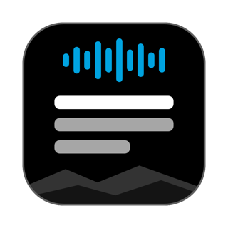
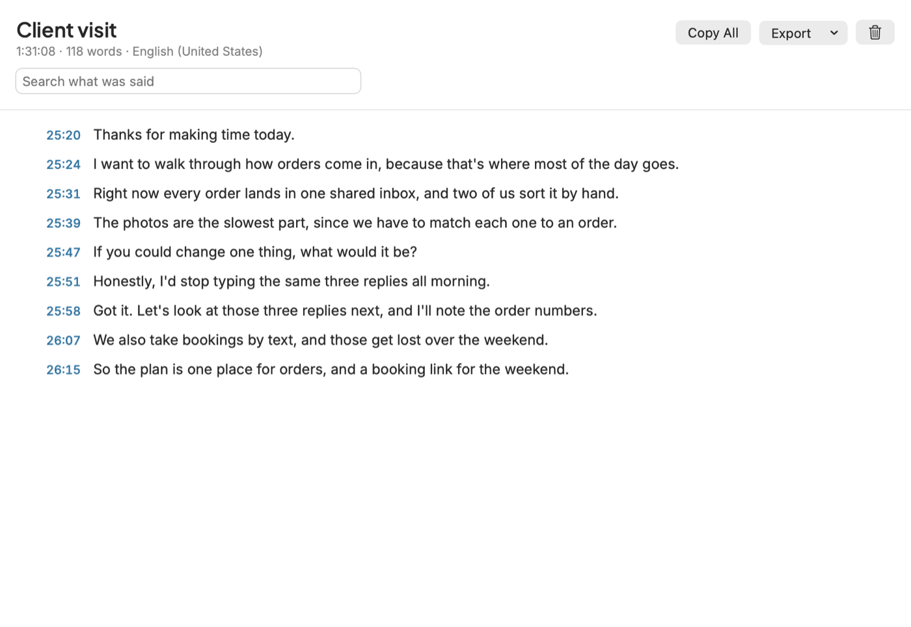
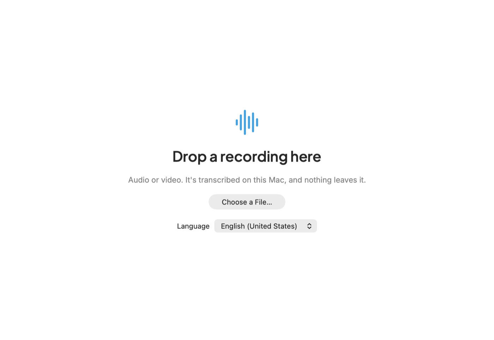
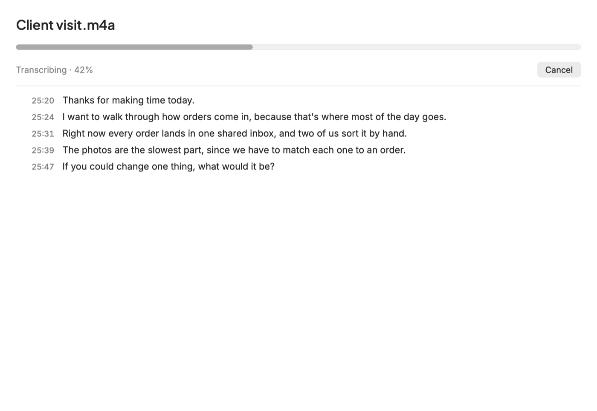
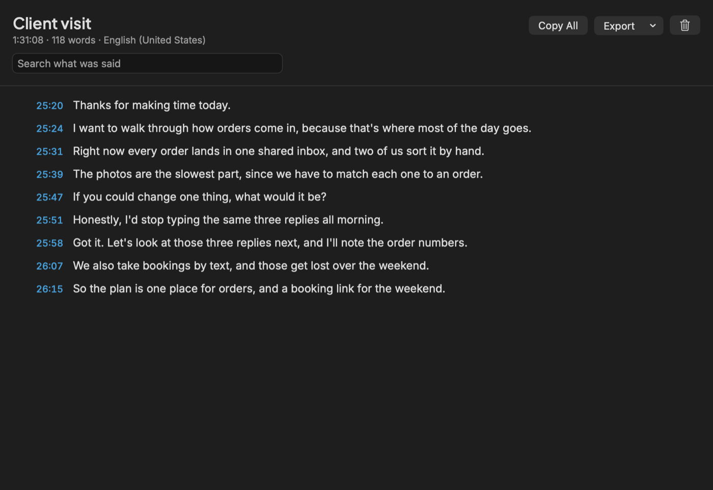

Your recordings, turned into text on your Mac
Drop in a recording or a video and get a searchable transcript with times. Nothing is uploaded, and there's nothing to pay per minute.
Free and open source. macOS 26 or later. See how to install first.

See it in under a minute
From recording to text in minutes
Drop it in
Voice Memos, Zoom recordings, phone videos and more. If a recording keeps the microphone and the other people on separate tracks, it hears them all.

It's fast
In my test, a 4 hour recording took about 2 minutes on an M5 MacBook Pro, and you can watch the lines appear. Your speed will depend on your Mac and your recording.

Find it and check it
Search for anything that was said. Click a time to hear that moment, so you can check a name or a number. Then copy it, or save it as text, Markdown, subtitles or JSON.

Your recordings stay on your Mac
It uses Apple's built-in speech engine on your Mac. The app runs in the macOS sandbox with no network permission, so macOS itself blocks it from the internet. There's no account, no analytics and no tracking. Transcripts are saved in the app on your Mac until you delete them. You can check all of this in the code.
Get it running
I don't pay for an Apple developer certificate on this free app, so macOS will warn you the first time. Here's how to get past that.
- Download the zip, open it, and drag Snowpine Transcribe to your Applications folder.
- Open it. macOS will say it can't check the app. Click Done.
- Go to System Settings > Privacy & Security, scroll down, and click Open Anyway.
- Drop in a recording. If macOS doesn't have the speech model for your language yet, it downloads it once.
To remove it, drag the app to the Trash. Delete any transcripts first if you want them gone from your Mac.
Or build it yourself
Building it yourself takes about a minute and skips the warning. You need the Xcode Command Line Tools.
git clone https://github.com/snowpinecode/snowpine-transcribe.git
cd snowpine-transcribe
scripts/build-app.sh --installGood to know
Is it really free?
Yes. It's open source under the MIT License, so you can use it, change it and share it.
Which Macs does it work on?
It needs macOS 26 or later, because it uses Apple's newer speech engine. I've only tested it on an Apple silicon MacBook Pro.
How accurate is it?
It's usually good on clear speech, but it can mishear names, numbers and unusual words. Click the time beside a line to check it by ear before you rely on it.
Does it say who's talking?
Not yet. Transcripts have times, but no speaker names.
Does it record meetings?
No. It works from recordings you already have, and it never uses your microphone. If you record people, ask them first.
Who made this?
Snowpine Code. I build custom websites, apps and automations. See what else I do.